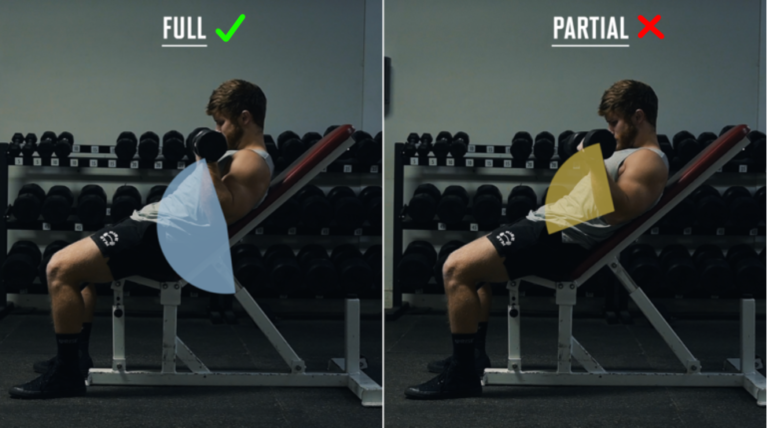

Hypertraining / Porady
Complete guide to muscle building and healthy nutrition
Performing exercises through full range of motion is crucial for hypertrophy. When a muscle is fully stretched under load, greater microdamage and activation of anabolic pathways occur.

Source: Jeff Nippard's YouTube Channel
"Reps in Reserve" (RIR) is the number of repetitions you could still perform. Train with RIR 1-3 for maximum growth stimulation.
Set 1:
50% load (12 reps)
Main Sets:
100% load (RIR 1-3)
💡 Soy Products: Contain all essential amino acids. Soy isoflavones may support skin health and do not negatively affect hormone levels in healthy individuals.
Chart: Protein benefits depending on intake (estimated). Increased protein consumption above 1.7 g/kg does not linearly bring greater benefits.
💡 Why important? Support absorption of vitamins A, D, E, K, hormone production, brain and heart health. Omega-3 has anti-inflammatory effects.
GI is a 0-100 scale showing how quickly carbohydrates from a given product raise blood glucose levels. Low GI products cause a slower, more stable sugar rise, which is beneficial for:
⚡ Tip: Combining carbohydrates with protein and fats slows absorption and lowers the effective GI of a meal. Fiber also slows digestion.
Stable blood sugar level
Greatest satiety
Increases meal volume
We often confuse thirst with hunger
Natural appetite suppression
Calorie control
Better perception of satiety
One of the most well-researched supplements. Helps muscles produce energy during intense effort.
Dosage: 3-5g daily
Convenient way to supplement daily protein needs.
When: After workout or as a supplement